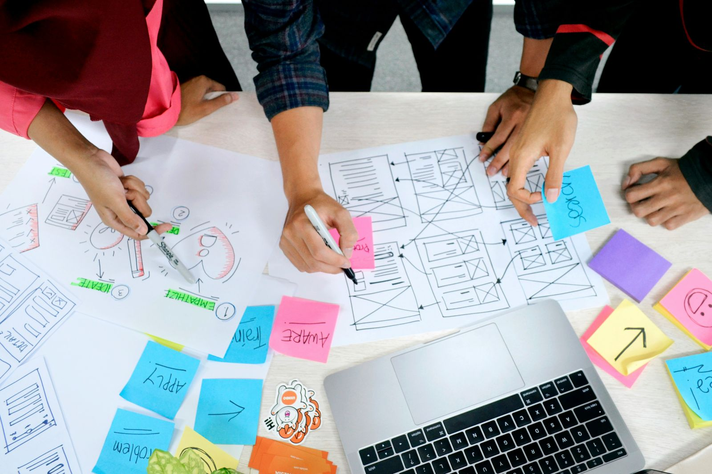

Diseñar con evidencia, paso a paso.
De la investigación a la prueba con usuarios: las etapas de un diseño bien hecho.

Las cuatro etapas
Cada etapa produce algo concreto que sirve de punto de partida para la siguiente.
-
Investigar
Antes de dibujar nada, se habla con personas reales para entender qué necesitan y qué les estorba. Se puede hacer con entrevistas, encuestas u observación.
Resultado: una lista de necesidades y problemas.
-
Definir
Con lo investigado se decide qué problema se va a resolver y para quién. Aquí nacen las personas de usuario: perfiles que representan a los usuarios reales.
Resultado: un problema claro y un perfil de usuario.
-
Prototipar
Se dibujan wireframes, que son bocetos simples de la estructura, y luego un prototipo que se pueda recorrer. Equivocarse aquí sale barato.
Resultado: una versión de prueba fácil de modificar.
-
Probar
Se observa a personas reales usando el prototipo, sin ayudarles, y se anota dónde se confunden o se traban.
Resultado: una lista de mejoras por hacer.
El proceso no es una línea recta: lo que se aprende al probar vuelve a la etapa de prototipar, y el ciclo se repite hasta que el diseño funciona.